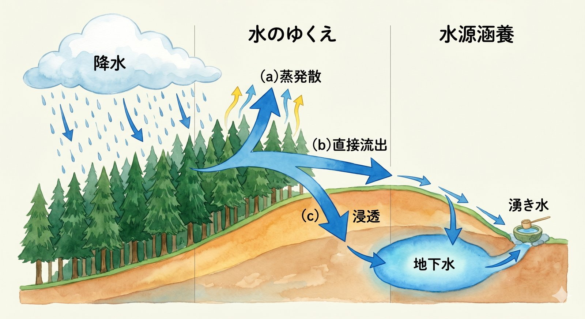
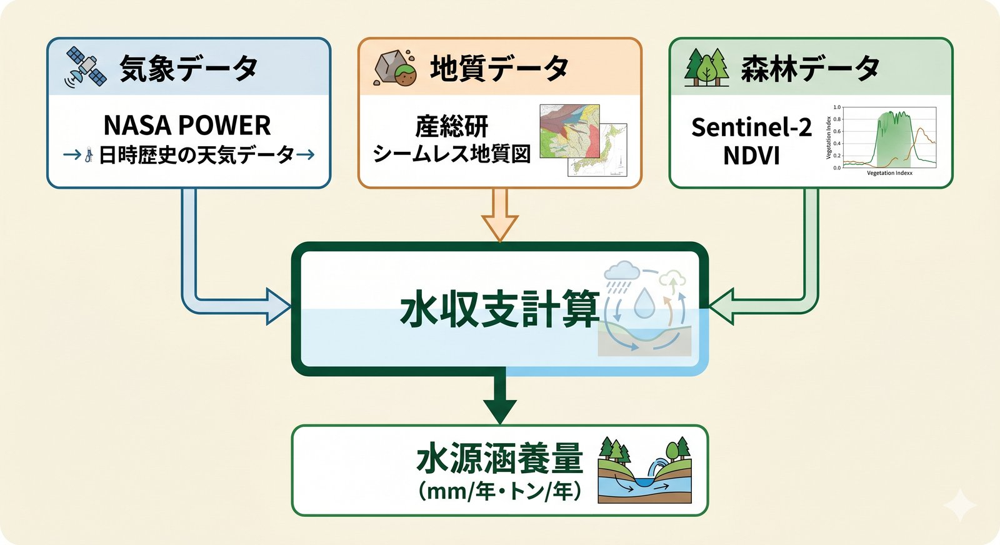
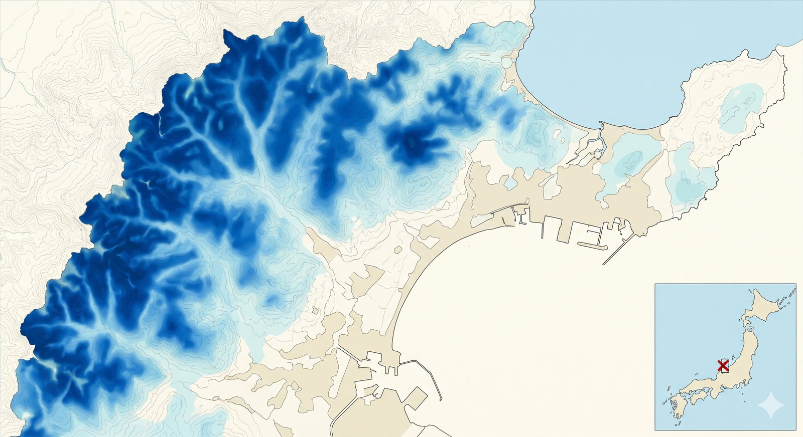

Forest Water Yield · Guide
令和8年3月公開の最新版に対応。森林が「水を貯える働き」を、 企業・自治体・市民団体の誰もが定量化できる新しい標準手法を、 計算式・必要データ・氷見市の実例で解説します。
水源涵養量（すいげんかんようりょう）とは、森林が降った雨の一部を地中に蓄え、 ゆっくりと地下水や河川の基底流量として下流に供給する量のことです。日本語では 「水資源涵養量」「貯留量」「基底流出量」などとも呼ばれます。
森林に降った雨は、(a) 樹冠で蒸発する、(b) 直接流出する、(c) 地中に浸透して時間をかけて流出する、 の3経路をたどります。このうち (c) 地中に浸透した分 が水源涵養量です。 洪水を抑え、渇水時にも水を供給する「天然のダム機能」の量的指標として、近年特に注目されています。

これまで、森林の水源涵養機能は「重要だが数字にしにくい」定性的な価値として扱われてきました。 しかし2020年代に入り、状況が大きく変わっています。
こうした背景のもと、林野庁は令和8年（2026年）3月、誰もが標準的な手法で 水源涵養量を算定できるよう、「林地における水資源涵養量の簡易評価手法 Ver.1.0」を 日英両言語の解説資料とExcel計算ツールとともに公開しました。
新しい簡易評価法は、水文学の標準的な「水収支法」を、 誰でも手元のデータで実行できる形にパッケージ化したものです。
単純な式ですが、各項に (a) 気象データ、(b) 地質データ、(c) 森林データ を組み合わせて 当該地域の値を埋め込みます。Ver.1.0 で標準化されたのが、この埋め込み手順です。
| 項目 | データソース（無料・公開） | 粒度 |
|---|---|---|
| 降水量 | 気象庁 AMeDAS／NASA POWER／気象庁メッシュ平年値 | 10分〜年 |
| 気温（蒸発散推定） | 気象庁 AMeDAS／NASA POWER | 10分〜年 |
| 地質 | 産総研 シームレス地質図／国土地理院 | 20m〜1kmメッシュ |
| 森林分布 | 国土数値情報 A13／林野庁 森林簿／衛星画像（Sentinel-2 NDVI） | 10m〜25mメッシュ |
| 林相（樹種・林齢） | 森林簿（自治体）／航空レーザ（栃木・兵庫・高知） | 林班単位 |

もりみえるでは、本手法を富山県氷見市の周辺森林（AOI 16km × 14km、面積 22,400 ha）に適用し、 2026年5月に 年間 約1.19億トン（961 mm／年） の水源涵養量を算定しました。
| 項目 | 値 | 備考 |
|---|---|---|
| 年降水量 | 2,331 mm／年 | NASA POWER 2020-2024 平均 |
| 蒸発散量 | 837 mm／年 | Thornthwaite 法 |
| 直接流出量 | 533 mm／年 | 第三紀地質ベース |
| 水源涵養量 | 961 mm／年 | 降水量の 41.2% |
| 森林面積 | 12,398 ha | Sentinel-2 NDVI から判定 |
| 市公式面積との一致率 | 92% | 市公式 13,486 ha との照合 |
年間1.19億トンは、一般家庭約160万世帯の年間生活用水に相当します。 詳細レポートは 氷見市水資源涵養量レポート で公開しています。

令和8年3月に公開された Excel ツールに、対象地域の降水量・気温・地質構成・森林面積を入力するだけで、 標準的な算定結果が得られます。計算量1ha〜1林班程度の用途に向いています。
住所または林班 ID を入力するだけで、衛星データと標準データを自動取得・計算し、レポートを生成します。 計算量100ha〜数万haの自治体・組合・企業用途に向いています。
Python（rasterio + pystac-client）で Sentinel-2 + NASA POWER + 産総研地質を統合する実装が もりみえる側で公開予定です。全国スケール・大量バッチ用途に向いています。
水源涵養量は、これまでカーボンクレジットの対象外でしたが、 TNFD（自然関連財務情報開示）の重要指標として、企業が自社の水使用が依存する 上流森林の機能を開示する場面で急速に使われ始めています。
もりみえるの 流域マッチング 機能は、自社工場・取水点の住所から 上流側の森林を自動特定し、その森林の水源涵養量を一括算定するため、 TNFD の LEAP アプローチ（Locate / Evaluate / Assess / Prepare）の Locate と Evaluate を一気通貫で実行できます。
最終更新：2026年5月17日。本記事は林野庁公開資料・公的データに基づき、もりみえるが独自に整理したものです。